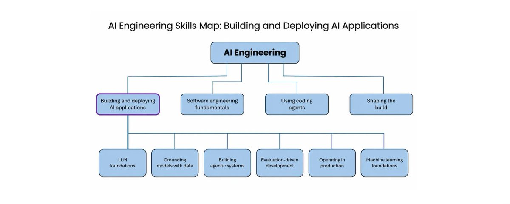

AI Engineering Skills Map: Building and Deploying AI Applications
- 分类
- AI
- 来源
- X · @AndrewYNg
- 原文
- 整理
- 原文链接
- 原文
先看这五句
- 输出不确定，所以只能迭代。AI 应用和传统软件的本质差别在这：没法事先规划完再施工。
- 建造和上线要会六件事。LLM 基础、用数据接地、搭 agentic 系统、以评估驱动开发、生产运维、机器学习基础。
- 最拉开差距的，是纪律严的 evals / 错误分析。会不会跑这一轮，决定你是不是在随机试。
- 生产要单独对付不可预测性、成本和延迟。可观测、漂移、回归测试、模型选择和蒸馏，都不是传统运维的平移。
- 技能图来自招聘、专家访谈和问卷。软件工程是下一篇。

这是一份阅读笔记，不是原文转载。吴恩达先前画过一张 AI 工程技能图，顶层四块：建造并上线 AI 应用、软件工程基础、用 coding agent、塑造建造过程。这篇只展开第一块——你会不会把不确定的模型，做成能上线的系统。
技能图从哪来
这不是书房里的分类游戏。地图来自大量招聘启事、结构化专家访谈和问卷，看行业实际在招什么、用什么、缺什么。顶层四项里，软件工程会另写一篇；coding agent 和 shaping the build 也先按下。这篇只回答：一个人要能独立把 AI 应用造出来、送上去，手里得有哪些本事。
「会用模型」不够。会选模型、会给它数据、会设计循环、会用评估推下一步、会在生产里盯住漂移和成本，并且还懂机器学习在底层怎么工作——这六项叠在一起，才叫会建造和部署。
六项技能
| 技能 | 在管什么 |
|---|---|
| LLM foundations | 模型怎么切词、怎么生成，何时可靠、何时会翻车 |
| Grounding models with data | 怎么把对的上下文喂进去，而不只是堆 RAG |
| Building agentic systems | 从写死的工作流，到让模型自己决定下一步的 harness |
| Evaluation-driven development | 用评估和错误分析决定下一刀砍哪里 |
| Operating in production | 不可预测、成本和延迟，要单独对付 |
| Machine learning foundations | 监督学习和强化学习仍是底座；偏差/方差还在指导决策 |
六项不是并列清单，是一套应对「输出不确定」的装备。前三项让你造得出来，中间一项决定你是不是在瞎试，后两项决定你能不能活在线上、以及你有没有底层心智模型。
为何必须迭代
AI 应用和传统软件的关键差别：前者的输出更难预测。你事先不知道 LLM 会吐什么，也不知道监督学习模型会给出什么预测。因为这种不确定，建造 AI 系统比传统软件更迭代——更难在动手前把过程规划完。
熟练的 AI 工程师在重复同一件事：做出一块、检查它、再决定下一步试什么。路径被中间结果强烈牵引。真正的本事，是会判断「下一步该做什么」，这样才能用不可靠的 AI 组件，拼出可靠的软件系统。
可靠的系统，可以建立在不可靠的组件上。前提是你会根据中间结果决定下一刀。
这也解释了后面为什么把评估驱动开发单独抬出来：迭代不是多试几次，而是每轮都把力气压到更可能结果实的方向上。
逐项拆开
LLM 基础
懂大模型怎么把输入切成 token、怎么生成输出，才能判断什么时候可以指望它、什么时候它会失败。同一套基础也用来做一串具体取舍：要不要上多模态、上下文窗口里该塞什么、缓存命中、知识截止日期、推理力度、采样参数，以及何时打开工具调用这类特殊能力。
基础扎实，才能选对模型或模型组合，并在需要时上微调或自托管。不懂机制，就容易把失败当成玄学，或者把所有问题都丢给「换一个更强的模型」。
用数据接地
LLM 要有好的输入上下文，输出才有用。早期的办法是向量检索做 RAG，但「把数据接到模型上」的菜单已经长了很多。你要决定：哪些写进提示，哪些让模型用工具按需取；数据用哪种表示——向量索引、知识图谱，还是结构化数据（比如客户档案）上的语义层。
还要把文本、PDF、HTML、图片变成模型吃得下的输入，并做出能保持干净、新鲜的数据管道。菜单越熟，越能把相关上下文送到模型眼前，而不是把整库一股脑塞进窗口。
搭 agentic 系统
一端是写死的工作流：一串预先排好的 LLM 调用。另一端是 agent harness：模型反复自己决定下一步。架构选择包括：哪些步骤串起来、哪些并行、哪里用代码、哪里用模型，以及工作流或 harness 的回退。
设计循环时还要定：模型能调哪些工具（MCP、CLI、沙箱执行环境）、记忆怎么架构、长会话如何管上下文、任务要不要从单 agent 升到多 agent 编排。原型能跑，离生产还差可靠、安全和治理：护栏、对抗输入、数据外泄这类关键风险，都要识别并绕开。
工作流还在快速变。和自己应用相关的前沿也值得跟：语音 agent、computer-use agent、生成式 UI。
以评估驱动开发
作者的经验里，最能把人拉开的，是能不能跑一轮纪律严的 evals / 错误分析，用它来驱动开发。这样你才会反复把力气压到更可能结果实的方向。这件事难，因为正确做法随项目而变，甚至随同一项目的阶段而变。
做好评估本身是一门深的技术活：看系统的 traces 和输出，做探索性分析，再叠上产品和业务判断，决定测什么。选项菜单包括：确定性的代码评估、LLM 当裁判、人在回路。还要评估你的评估，让量尺自己也能迭代。评估喂回开发，进度才从随机试变成系统推进。
会不会做这一轮，比会不会写提示更能决定你能不能把不可靠的组件做成可靠系统。
生产运维
运维 AI 软件和传统软件不同，因为它的不可预测、成本和延迟。先要有可观测性，才能看清真实用量下的表现：盯性能、抓漂移、快速响应模型故障和对抗性提示注入这类安全事件。
回归测试和 CI/CD 要比传统软件更依赖统计评估，测试投入要按「错一次有多贵」来校准。面向大量用户时，还要会选一套组合去压成本和延迟：模型选择、蒸馏和微调、把 agentic 工作流简化。这些不是把传统 SRE 手册换个封面。
机器学习基础
现代 LLM 是用机器学习做出来的，包括监督学习和强化学习。作者认识的每一个擅长用 LLM 建造的工程师，对机器学习和深度学习都有一定深度。许多应用仍然要会用机器学习——别人训好的模型，或自己训一个。
这要求熟悉常见模型和权衡：精度、训练速度、推理速度，以及怎么为训练和评估工程化数据。偏差/方差、错误分析、把数据工程做好——这些心智框架本来就是为「输出不确定的系统」准备的，在 AI 系统开发里仍然管着大量决策。
收束
要把 AI 系统造好并送上去，要学的东西很多，这行有技术深度。但每多懂一点，都会让你更会做 AI 工程，也能做出更有意思的应用。软件工程是这六项的强互补，作者说会另写一篇。
读完可以自问三句：你现在的建造过程，是事先规划完再施工，还是被中间结果牵引着迭代？下一刀砍哪里，是感觉还是评估？上线之后，不可预测、成本和延迟，有没有人单独负责？